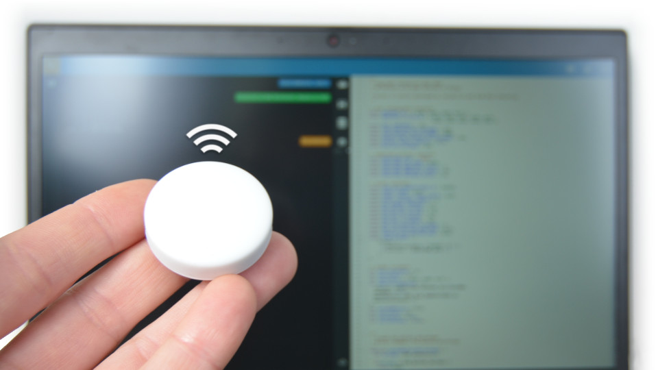
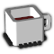
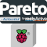
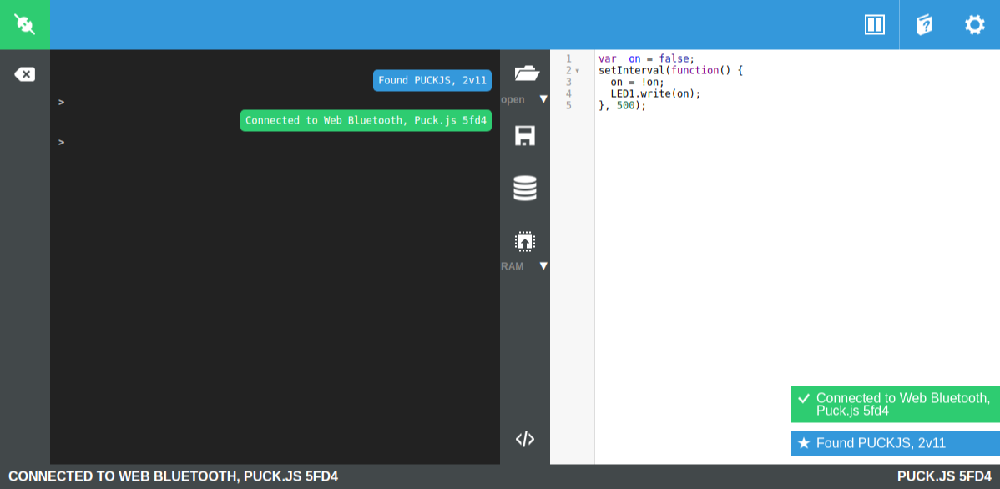
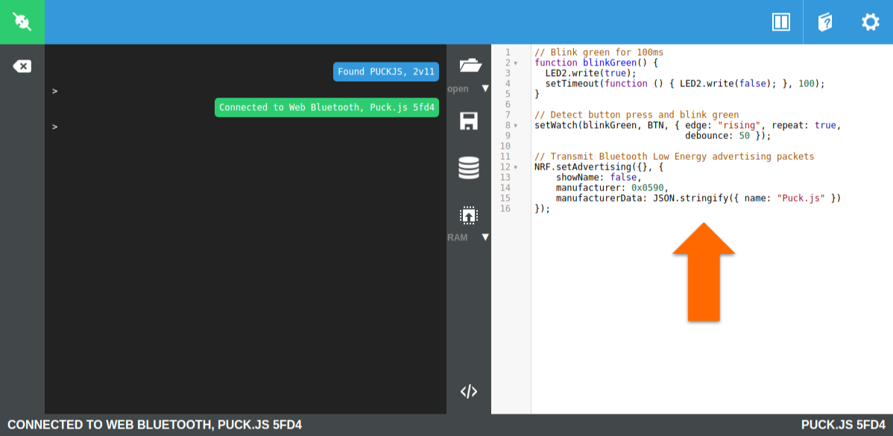
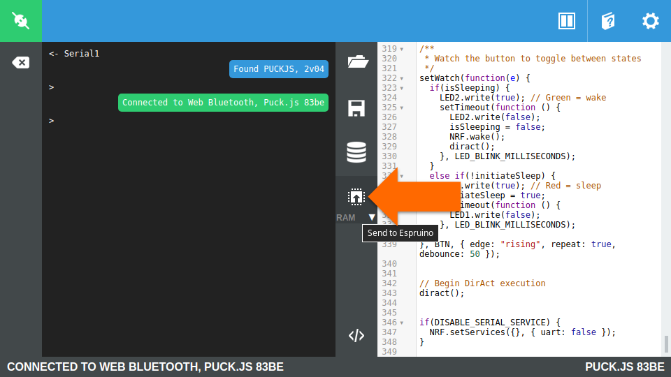
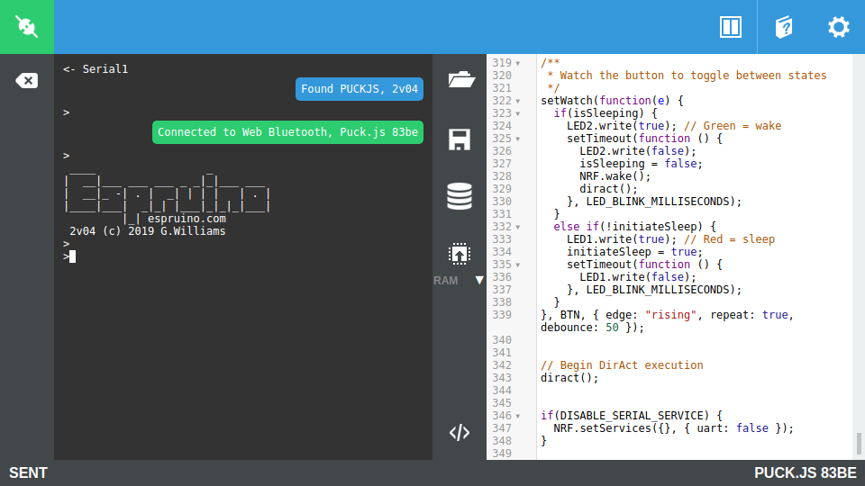
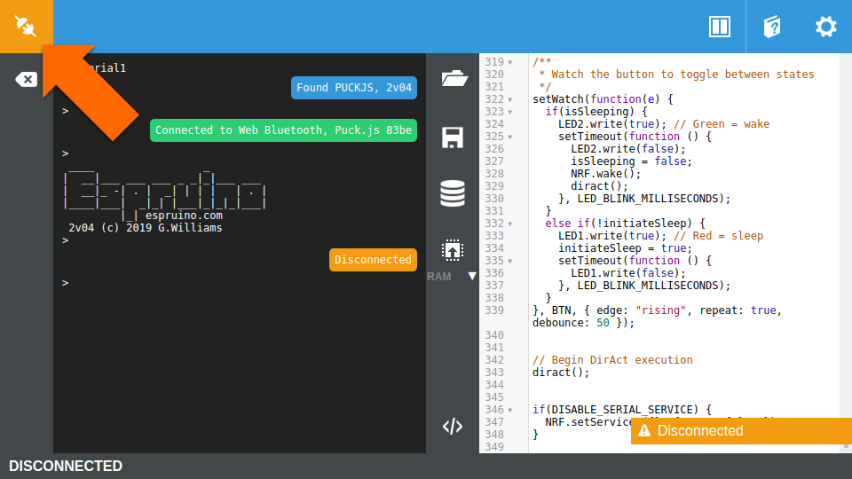
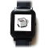

Puck.js Development Guide
Discover and develop Puck.js applications for context-aware physical spaces using Espruino and Bluetooth Low Energy.
The TL;DR (Too Long; Didn't Read)
Learn how to program a Puck.js smart button with existing applications, or develop your own.
- What's Puck.js?
- Puck.js is an open hardware device that combines a Bluetooth Low Energy (BLE) microcontroller with plenty of sensors in a nifty button format.
- What will this accomplish?
- The Puck.js will share its sensor data and/or identifiers wirelessly using BLE advertising packets.
- Is there an easier way?
- Programming Espruino devices like the Puck.js from the browser using Web Bluetooth is already incredibly easy.
Prerequisites
A Puck.js and, optionally, a Pareto Anywhere instance creating a context-aware space
- 
-
Buy a Puck.js from the Espruino Shop
Support the ongoing development of Espruino open source software and devices!
-
[OPTIONAL] Run Pareto Anywhere on a PC
Install and run Pareto Anywhere on a personal computer to make any physical space context-aware.
- 
-
[OPTIONAL] Run Pareto Anywhere on a Raspberry Pi
Install and run Pareto Anywhere on a Pi to make any physical space context-aware.
Connecting to the Puck.js Step 1 of 3
Browse to the Espruino IDE and connect using Web Bluetooth.
- What's Espruino?
- Espruino is a JavaScript Interpreter for microcontrollers. It is open source firmware that ships with the Puck.js.
- What's Web Bluetooth?
- Web Bluetooth enables web browsers to connect and interact with Bluetooth Low Energy devices, like the Puck.js.
Prerequisites
A web browser which supports Web Bluetooth
Many—but not all—modern browsers such as Chrome support Web Bluetooth by default. MDN maintains this list of browser compatibility should your preferred web browser fail to support Web Bluetooth by default.
Browse to the Espruino IDE Part 1
Point a web browser to espruino.com/ide/ and observe the integrated development environment (IDE) as in the screenshot below.

Connect with Web Bluetooth Part 2
Click on the Connect/Disconnect icon at top left, and then select Web Bluetooth from the popup.

Pair with the Puck.js Part 3
Identify and select Puck.js from the list of scanned devices, then click Pair.
If the desired Puck.js does not appear, check the following:
- is it powered on?
- is it within a few metres of the computer?
- is the Puck.js connectable in the Settings menu?
If pairing is successful, the Connect/Disconnect icon at top left will turn green.
The Puck.js can now be programmed wirelessly from the browser using Web Bluetooth, which is the subject of the next step.
Programming the Puck.js Step 2 of 3
Load a JavaScript file and send it to the Puck.js.
- Why JavaScript?
- JavaScript runs on almost every modern website (client-side), on many back-ends with Node.js (server-side), and lends itself well even to embedded devices with Espruino.
- Any alternatives?
- The Espruino IDE provides a Graphical Editor for novices to program with blocks.
From the Espruino IDE connected to the Bangle.js:
Enter the "Hello World!" program Part 1
Copy Ctrl+C and paste Ctrl+V the following lines of code into the code editor window of the Espruino IDE:
// Blink green for 100ms
function blinkGreen() {
LED2.write(true);
setTimeout(function () { LED2.write(false); }, 100);
}
// Detect button press and blink green
setWatch(blinkGreen, BTN, { edge: "rising", repeat: true, debounce: 50 });
// Transmit Bluetooth Low Energy advertising packets
NRF.setAdvertising({}, {
showName: false,
manufacturer: 0x0590,
manufacturerData: JSON.stringify({ name: "Puck.js" })
});

Upload to RAM Part 2
Click on the Send to Espruino button in the centre toolbar, ensuring that the default option to write to RAM is selected.
A progress bar will appear in the bottom right corner followed by SENT in the bottom left corner of the IDE once the program upload completes.
The program will automatically execute and any console output, including error messages, may be observed in the area highlighted in the screenshot below.
Observe the "Hello World!" output Part 3
The Puck.js will blink green on button press.
The Puck.js will not, however, transmit Bluetooth Low Energy advertising packets while it is connected. Click on the Connect/Disconnect icon at top left to disconnect from the Puck.js.
If an instance of Pareto Anywhere is running, the Puck.js should be discoverable by its Bluetooth Low Energy advertising packets which use the company code 0x0590 registered to Pur3 Ltd, the company which develops the Espruino open source firmware running on the Puck.js as well as the web IDE we used to upload our "Hello World!" program.
Program execution will continue until the battery is removed or until another program is executed via the Espruino IDE.
Running other programs Step 3 of 3
Explore the potential of the Puck.js in context-aware physical spaces.
- What are context-aware physical spaces?
- These are spaces that make sense of who/what is where/how by collecting and processing ambient wireless data, like that advertised by the Puck.js.
- Why use Puck.js?
- The Puck.js is the first open source sensor beacon platform we've identified that offers unconstrained programming freedom, allowing, among other things, the development of novel interactions in context-aware physical spaces.
Knob.js Code
Load the Knob.js code from our GitHub and transmit angle of rotation data that can be observed in Pareto Anywhere's APIs and web apps.
DirAct Code
Load the DirAct code from our GitHub and transmit real-time proximity interactions that can be observed in Pareto Anywhere's APIs and web apps.
More programs
See our Espruino Apps repository on GitHub for the latest available programs.

Tutorial prepared with ♥ by jeffyactive.
You can reelyActive's open source efforts directly by contributing code & docs, financially with an annual subscription, and collectively by sharing across your network. We invite you to Gordon's work on Espruino with a donation too!Where to next?
Continue exploring our open architecture and all its applications.
- 
-
Bangle.js Development Guide
Discover and develop Bangle.js applications for context-aware physical spaces using Espruino and Bluetooth Low Energy.
-
reelyActive Developers
Browse all developer documentation and tutorials.
-
www.reelyActive.com
Make any physical space context-aware for what matters for your business.